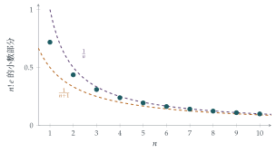

本節會用到兩道題目。第一道出自 1997 年，證明 \(e\) 是無理數（irrational number）。第二道出自 2024 年，把同一個想法用得更巧妙，證明 \(e^2\) 是無理數，而這原來確實困難得多。
STEP III 1997，第 7 題
繼續之前，請先閱讀題目（原題為英文）。題目載於 STEP Support Programme 的題目資料庫： step.maths.org/questions/97-s3-q7
STEP III 2024，第 7 題
繼續之前，請先閱讀題目（原題為英文）。題目載於 OCR 提供下載的 2024 年 STEP 試卷（zip 檔案）內的 STEP III 試卷： www.ocr.org.uk/Images/725753-2024-past-papers.zip
引子
在 第 1.3 節 中，我們證明了 \(\sqrt2\) 是無理數，用的是 \(\sqrt2\) 滿足一條簡單方程 \(x^2 = 2\) 這個事實。但就我們所知，\(e\) 並不滿足任何這樣的方程。我們手上只有它的級數（series）： \[e = 1 + \frac{1}{1!} + \frac{1}{2!} + \frac{1}{3!} + \cdots.\] 一個級數怎能告訴你某個數不是分數？
答案是數論（number theory）中最有用的想法之一：整數（integer）不可能嚴格介乎 \(0\) 與 \(1\) 之間。如果你能證明某個量是整數，同時又嚴格介乎 \(0\) 與 \(1\) 之間，就得出矛盾（contradiction）。本節的一切，都是這個主題的變奏。
動筆之前
假設 \(e = p/q\)。把 \(e\) 乘以 \(q\) 會得到整數。那麼乘以 \(q!\) 又會對 \(e\) 的級數的每一項有甚麼影響？
只要 \(k \leq q\)，把 \(\dfrac{1}{k!}\) 乘以 \(q!\) 都會得到整數。因此 \(q!\,e\) 可分成整數部分（首 \(q+1\) 項）和「尾部」（tail，即其後的所有項）。若 \(e = p/q\)，則 \(q!\,e\) 本身是整數，所以尾部也必定是整數。我們的計劃，就是證明尾部嚴格介乎 \(0\) 與 \(1\) 之間。
逐步解題
階段 1 熱身題：\(e\) 是無理數
級數 \(b_n\) 是等比級數（geometric series），首項和公比都是 \(\frac{1}{n+1}\)，所以 \[b_n = \frac{1/(n+1)}{1 - 1/(n+1)} = \frac{1}{n}.\]
逐項比較 \(a_n\) 和 \(b_n\)。哪一個較大？
兩者的首項相等。其後，\((n+1)(n+2) > (n+1)^2\)，而一般來說，當 \(k \geq 2\) 時 \((n+1)(n+2)\cdots(n+k) > (n+1)^k\)，所以 \(a_n\) 其後的每一項都小於 \(b_n\) 的對應項。因此 \(0 < a_n < b_n = 1/n\)。
現在看看 \(a_n\) 究竟是甚麼。把 \(e\) 的級數乘以 \(n!\)： \[n!\,e = \underbrace{\frac{n!}{0!} + \frac{n!}{1!} + \cdots + \frac{n!}{n!}}_{\text{整數}} + \underbrace{\frac{n!}{(n+1)!} + \frac{n!}{(n+2)!} + \cdots}_{=\,a_n}.\] 由於 \(0 < a_n < 1\)，\(n!\,e\) 的整數部分就是第一個括號，而 \(a_n\) 就是小數部分（fractional part）：\(a_n = n!\,e - [n!\,e]\)。
現在完成證明。假設 \(e = p/q\)。你應該選取哪個 \(n\) 值？
取 \(n = q\)。那麼 \(q!\,e = (q-1)!\,p\) 是整數，所以它的小數部分 \(a_q\) 是 \(0\)。但 \(a_q > 0\)。矛盾：\(e\) 是無理數。■
這個證明出自傅立葉（Joseph Fourier），約於 1815 年提出。
階段 2 為何 \(e^2\) 較難
試把同一個想法用於 \(e^2\)。它的級數是 \(\sum 2^k/k!\)。當你乘以 \(n!\) 再看尾部時，哪裏出了問題？
尾部現在是 \(\dfrac{2^{n+1}}{n+1} + \dfrac{2^{n+2}}{(n+1)(n+2)} + \cdots\)，而 \(2\) 的冪把一切都破壞了：尾部不再細小。乘以 \(n!\) 對分子中的 \(2^k\) 毫無幫助。
2024 年這道題的妙着，是完全避開 \(e^2\)。若 \(e^2 = p/q\)，則 \[qe = \frac{p}{e}.\] 現在我們有兩個數 \(e\) 和 \(1/e\)，各自都有一個階乘（factorial）級數，而且沒有麻煩的 \(2\) 的冪： \[e = \sum_{k=0}^{\infty} \frac{1}{k!}, \qquad \frac1e = \sum_{k=0}^{\infty} \frac{(-1)^k}{k!}.\]
階段 3 兩個尾部
第 (i) 部分正正就是熱身題：\(0 < f(n) < 1/n\)。
至於第 (ii) 部分，\(g(n)\) 是一個各項的大小遞減的交錯級數（alternating series）。
對於交錯級數 \(t_1 - t_2 + t_3 - \cdots\)，其中 \(t_1 > t_2 > t_3 > \cdots > 0\)，為何它的和介乎 \(0\) 與 \(t_1\) 之間？
把各項兩兩配對：\((t_1 - t_2) + (t_3 - t_4) + \cdots\) 是若干個正括號之和，所以是正數。換另一種方式配對：\(t_1 - (t_2 - t_3) - (t_4 - t_5) - \cdots\) 是 \(t_1\) 減去若干個正括號，所以小於 \(t_1\)。這裏 \(t_1 = \frac{1}{n+1}\)，而各項遞減，因為每一項都是前一項除以一個大於 \(1\) 的數。所以 \(0 < g(n) < \frac{1}{n+1}\)。
階段 4 又見整數
把 \(e\) 乘以 \((2n)!\)，然後分出尾部，做法與熱身題完全一樣： \[(2n)!\,e = (\text{整數}) + f(2n).\] 所以 \((2n)!\,e - f(2n)\) 是整數。現在對 \(1/e\) 做同樣的事： \[\frac{(2n)!}{e} = \sum_{k=0}^{2n} (-1)^k \frac{(2n)!}{k!} + \sum_{k=2n+1}^{\infty} (-1)^k \frac{(2n)!}{k!}.\]
尾部的首項（即 \(k = 2n+1\) 的一項）是甚麼符號？尾部與 \(g(2n)\) 相比又如何？
尾部首項的 \(k = 2n+1\) 是奇數，所以該項是負數。尾部是 \[-\frac{1}{2n+1} + \frac{1}{(2n+1)(2n+2)} - \cdots = -g(2n).\] 所以 \(\dfrac{(2n)!}{e} + g(2n)\) 是整數。■
這就是題目用 \(2n\) 而不用 \(n\) 的原因：乘數是偶數的階乘時，\(1/e\) 的尾部恰好是 \(-g\)，符號可以預知。
階段 5 矛盾
假設 \(qe = p/e\)。把等式兩邊乘以 \((2n)!\)，並利用第 4 步： \[q\bigl(\text{整數} + f(2n)\bigr) = p\bigl(\text{整數} - g(2n)\bigr).\] 移項整理後，\(q f(2n) + p g(2n)\) 等於若干整數的組合，所以它是整數。這就是第 (iv) 部分。
現在利用第 3 步的上下界。當 \(n\) 非常大時，\(q f(2n) + p g(2n)\) 會怎樣？
\(f(2n)\) 和 \(g(2n)\) 都是正數，所以 \(q f(2n) + p g(2n) > 0\)。而且 \[q f(2n) + p g(2n) < \frac{q}{2n} + \frac{p}{2n+1} < \frac{p+q}{2n}.\] 選取 \(n > (p+q)/2\)。那麼 \(q f(2n) + p g(2n)\) 就是一個嚴格介乎 \(0\) 與 \(1\) 之間的整數。這是不可能的，所以 \(e^2\) 是無理數。■

回顧
推動整個證明的是「沒有整數嚴格介乎 0 與 1 之間」。兩個證明都構造出一個必定是整數的量，然後把它困住。
階乘令尾部變小。乘以 \(n!\) 把級數的開首部分變成整數，剩下一個像 \(1/n\) 那樣縮小的尾部。
正面進攻失敗時，就重新整理。我們沒有正面處理 \(e^2 = p/q\)，而是把它改寫成 \(qe = p/e\)，把困難分攤到兩個較易處理的數上。
細節很重要。選用 \(2n\) 而非 \(n\)，固定了尾部的符號。許多證明的成敗，都取決於這樣的一個小細節。
背後的數學
劉維爾（Joseph Liouville）在 1840 年證明了 \(e^2\) 是無理數，而且事實上它不滿足任何整數係數的二次方程。1873 年，埃爾米特（Charles Hermite）走得遠得多：他證明了 \(e\) 是超越數（transcendental number），意思是它不是任何整數係數多項式的根。他的證明正是上述論證的精密版本：構造一個整數，再證明它嚴格介乎 \(0\) 與 \(1\) 之間。九年後，林德曼（Ferdinand von Lindemann）改造了埃爾米特的方法，證明 \(\pi\) 是超越數，終於證實以尺規「化圓為方」這個古老問題是不可能做到的。
我們仍未知道的事
儘管這些方法威力強大，一些簡單得令人尷尬的問題卻仍未解決。\(e + \pi\) 是無理數嗎？\(e\pi\) 呢？沒有人知道，雖然兩者之中至少有一個必定是超越數（練習 4）。\(\zeta(3) = 1 + \frac{1}{8} + \frac{1}{27} + \cdots\) 是無理數嗎？是的：阿培里（Roger Apéry）在 1978 年證明了這一點，震驚了整個數學界。\(\zeta(5)\) 呢？沒有人知道。
逼近
這些證明背後有一個更深刻的想法：如果一個數能被分數逼近得太好，它就是無理數。\(e\) 的級數的部分和（partial sum）都是分數，而且很快就非常接近 \(e\)；一個分數不可能被其他分數逼近得那麼好。這就是丟番圖逼近（Diophantine approximation）的起點。它是數論的一個分支，你可以在 第 2.9 節 進一步探索，那裏會用另一族積分得出更好的分數，步步逼近 \(e\)。
思維技巧
要證明一個數是無理數，先假設它是分數，由此構造一個必定是整數的量，再證明這個量嚴格介乎 \(0\) 與 \(1\) 之間。
箇中的藝術在於選擇這個量。在這裏，乘以階乘把級數的大部分變成整數，剩下一個細小但為正數的尾部。
延伸練習
只用 \(1/e\)。假設 \(1/e = p/q\)，並只利用 \(1/e\) 的交錯級數，證明 \(e\) 是無理數。
\(\sin 1\) 是無理數。利用 \(\sin 1 = 1 - \dfrac{1}{3!} + \dfrac{1}{5!} - \cdots\) 證明 \(\sin 1\) 是無理數。（乘以一個合適的奇數的階乘。）
為何 \(\pi\) 不行？解釋為何這個方法不能直接用於 \(\pi\)。然後查閱 Ivan Niven 在 1947 年發表、只有一頁的 \(\pi\) 是無理數的證明，當中用的是積分而不是級數。能力強的高級程度（A-level）學生應可讀懂。
其中一個是超越數。 較難 證明 \(e\) 和 \(\pi\) 是 \(x^2 - (e+\pi)x + e\pi = 0\) 的根。你可以假設：若一個多項式的係數都是代數數（algebraic number），則它的根本身也是代數數；以及 \(\pi\) 不是代數數（林德曼）。由此推出 \(e + \pi\) 和 \(e\pi\) 之中至少有一個是超越數。
延伸閱讀
Aigner & Ziegler, Proofs from THE BOOK，第 8 章「Some irrational numbers」（一些無理數）。正是用這些想法，證明 \(e\)、\(e^2\)、\(e^4\) 和 \(\pi^2\) 都是無理數。
Ivan Niven, Irrational Numbers（Mathematical Association of America）。一本篇幅不長的經典，內容由 \(\sqrt2\) 一直談到超越性。
Julian Havil, The Irrationals（Princeton University Press）。一本淺白易讀的無理數歷史。